Universidad Rafael Landívar
Facultad de Ingeniería · Ingeniería en Informática y Sistemas
Bases de Datos II
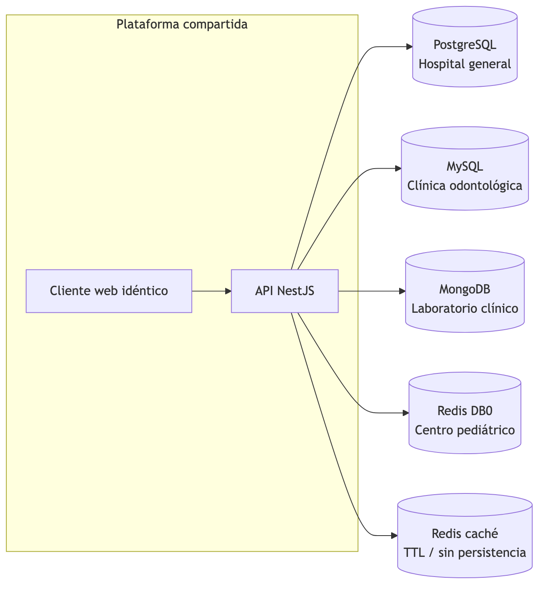
| Institución | Motor | Entrega I |
|---|---|---|
| Hospital general | PostgreSQL | ER + DDL 3NF |
| Clínica odontológica | MySQL | ER + DDL 3NF + odontograma |
| Laboratorio clínico | MongoDB | Análisis completo (entidades, atributos, ops) |
| Centro pediátrico | Redis | Análisis completo (entidades, atributos, ops) |
Cada institución es dueña de su infraestructura. Un mismo motor no se repite.
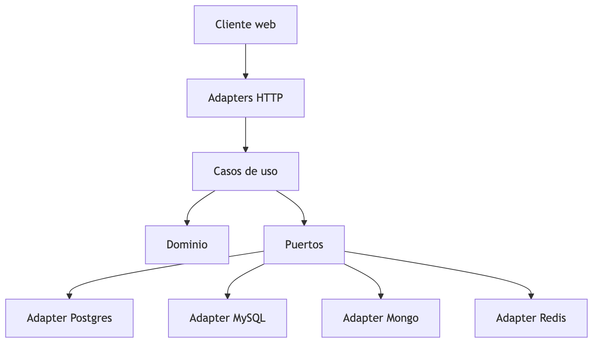
Regla: dominio/ no importa NestJS ni drivers. Los casos de uso no tienen if por motor. El JWT (Entrega II) lleva institucionId y un provider de request scope elige el adaptador.
Levantamiento común a las cuatro instituciones. Las extensiones (odontograma, resultado de examen, curva/vacunas) se documentan en cada institución.
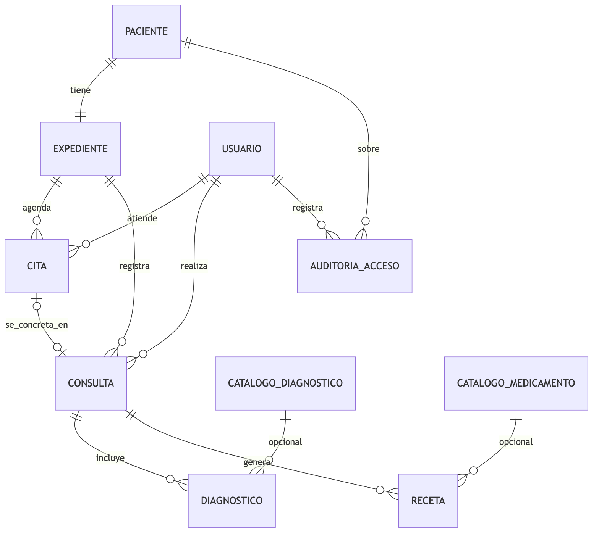
Cardinalidades:
| Relación | Tipo |
|---|---|
| Paciente–Expediente | 1:1 (por institución / motor) |
| Expediente–Cita | 1:N |
| Expediente–Consulta | 1:N |
| Cita–Consulta | 0..1 : 0..1 (conectadas; una cita puede no concretarse) |
| Consulta–Diagnóstico | 1:N |
| Consulta–Receta | 1:N |
Extensiones (documentadas en sus secciones):
Levantamiento completo del historial clínico para las cuatro instituciones. El núcleo es compartido; cada institución añade extensiones.
| Atributo | Tipo lógico | Notas |
|---|---|---|
| id | UUID / string | PK |
| nombre | texto | |
| correo | texto | único |
| rol | enum | médico, secretaria/enfermería/laboratorista, admin |
| especialidad | texto | nullable |
| activo | booleano | |
| creado_en | timestamp |
| Atributo | Tipo lógico | Clasificación |
|---|---|---|
| id | identificador | — |
| dpi | texto nullable | confidencial |
| nombres, apellidos | texto | confidencial (*restringido* si menor) |
| fecha_nacimiento | fecha | confidencial / restringido si menor |
| sexo | enum | confidencial / restringido si menor |
| telefono, dirección, correo | texto | confidencial |
| codigo_referencia | texto nullable | confidencial — referidos (laboratorio) |
| Atributo | Tipo lógico | Notas | |
|---|---|---|---|
| id | identificador | PK | |
| paciente_id | ref | UNIQUE → 1:1 por institución | |
| estado | activo \ | archivado | no se borra |
| motivo_archivo | texto | nullable | |
| archivado_en | timestamp | nullable | |
| version | entero | concurrencia optimista |
| Atributo | Tipo lógico | Notas |
|---|---|---|
| id | identificador | |
| expediente_id, medico_id | ref | |
| inicio, fin | timestamp | fin > inicio |
| estado | programada / atendida / cancelada / inasistencia | |
| motivo | texto | |
| consulta_id | ref nullable | enlace a consulta ocurrida |
| Atributo | Tipo lógico | Clasificación |
|---|---|---|
| id | identificador | |
| expediente_id, medico_id | ref | |
| cita_id | ref nullable único | |
| ocurrida_en | timestamp | |
| motivo | texto | restringido |
| notas | texto | restringido |
| Atributo | Tipo lógico | Clasificación |
|---|---|---|
| id | identificador | |
| consulta_id | ref | |
| catalogo_diagnostico_id | ref nullable | |
| texto_libre | texto | restringido (obligatorio) |
| es_principal | booleano |
| Atributo | Tipo lógico | Clasificación |
|---|---|---|
| id | identificador | |
| consulta_id | ref | |
| catalogo_medicamento_id | ref nullable | |
| texto_libre, dosis, frecuencia | texto | restringido |
| duracion_dias | entero |
Códigos y descripciones de referencia (subconjunto sintético).
| Atributo | Tipo lógico | Notas |
|---|---|---|
| id | identificador | |
| actor_id, paciente_id | ref | |
| accion, recurso | texto | quién / qué |
| ocurrido_en | timestamp | cuándo |
| detalle | texto | sin volcar datos clínicos a logs |
---
| Atributo | Tipo lógico | Notas |
|---|---|---|
| id | identificador | |
| expediente_id | ref | |
| codigo_fdi | entero 11–48 | UNIQUE con expediente |
| estado | enum | sano, caries, obturado, corona, ausente, … |
| notas | texto | |
| actualizado_en | timestamp |
| Atributo | Tipo lógico | Clasificación |
|---|---|---|
| id | identificador | |
| pieza_dental_id | ref | |
| consulta_id | ref | |
| tipo | texto | |
| descripcion | texto | restringido |
| realizado_en | timestamp |
Detalle ER: documento de odontología.
---
codigo, nombre, categoria (hematologia / orina / cultivo / otro), campos_esperados.
pacienteId (referencia), tipoExamen, fecha, estado, valores (estructura variable según tipo), observaciones, version.
Detalle completo: documento de laboratorio.
---
tutor_nombre, tutor_telefono, tutor_dpi, alergias_conocidas. Identidad del menor = restringido.
fecha, peso_kg, talla_cm, perimetro_cefalico_cm, percentil_peso, percentil_talla.
código de vacuna, número de dosis, aplicada_en, proxima_en, lote.
Detalle completo: documento de pediatría.
---
| Institución | Motor | Extensiones |
|---|---|---|
| Hospital general | PostgreSQL | Núcleo completo (citas, diagnósticos, recetas) |
| Clínica odontológica | MySQL | PiezaDental, ProcedimientoDental |
| Laboratorio clínico | MongoDB | TipoExamen, ResultadoExamen |
| Centro pediátrico | Redis | MedicionCrecimiento, TipoVacuna, DosisVacuna, tutor |
Tres niveles, aplicables a las cuatro instituciones.
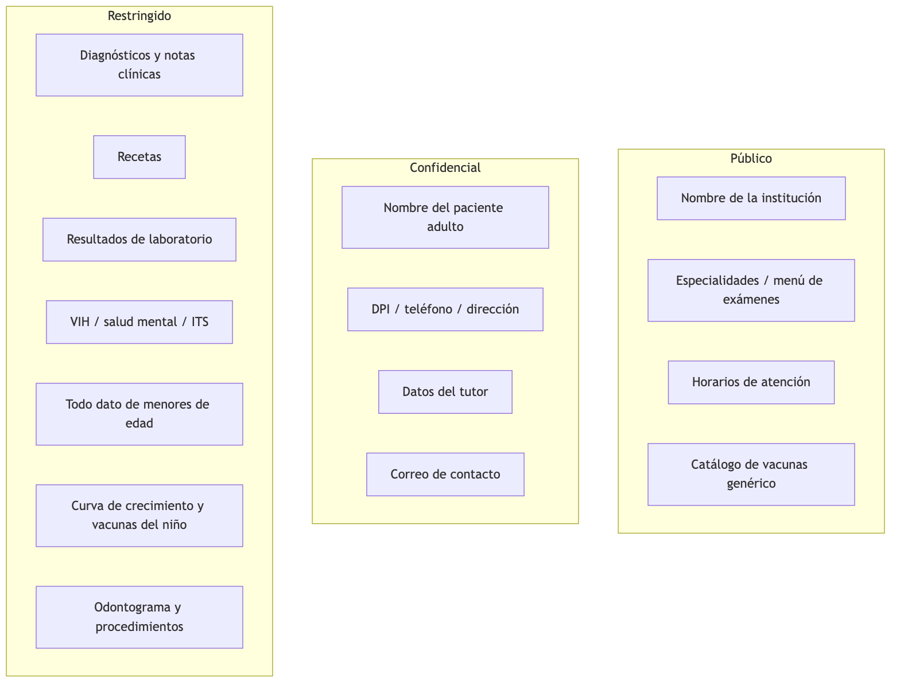
| Dato / institución | Hospital | Odontología | Laboratorio | Pediátrico |
|---|---|---|---|---|
| Nombre institución, horarios | Público | Público | Público | Público |
| Identidad paciente adulto | Confidencial | Confidencial | Confidencial | — |
| Identidad menor + tutor | — | — | — | Restringido / Confidencial (tutor) |
| Diagnóstico / notas / receta | Restringido | Restringido | Secundario | Restringido |
| Resultado de examen | — | — | Restringido | — |
| Odontograma | — | Restringido | — | — |
| Crecimiento / vacunas | — | — | — | Restringido |
hospital_app, odontologia_app; equivalentes en Mongo/Redis en Entrega II).Marcar en catálogo o metadatos cuando aplique: VIH, salud mental, ITS, genética. El acceso debe auditarse igual; la UI futura puede exigir confirmación adicional (fuera del alcance de Entrega I).
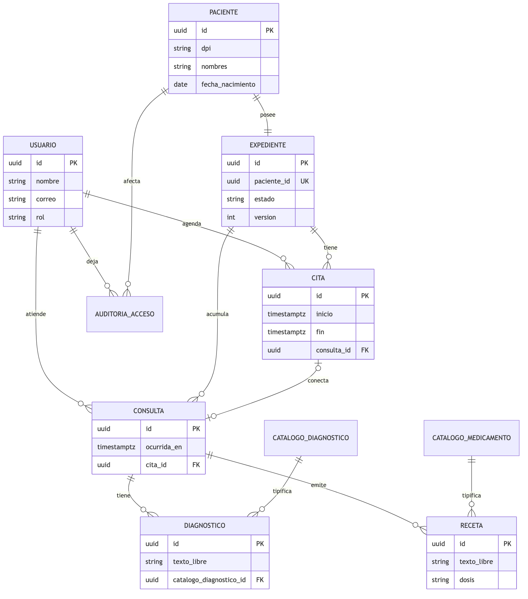
Schema clinico en la base hospital:
usuario, paciente, expedientecita, consulta (FK cruzadas opcionales)catalogo_diagnostico, catalogo_medicamentodiagnostico, recetaauditoria_accesoDDL: apps/api/src/infraestructura/postgres/migrations/001_clinico.sql
En Entrega II el Hospital migrará a event store + read model (el expediente se enmienda, no se UPDATE). Entrega I entrega el historial en 3NF para cumplir el enunciado de modelo relacional normalizado.
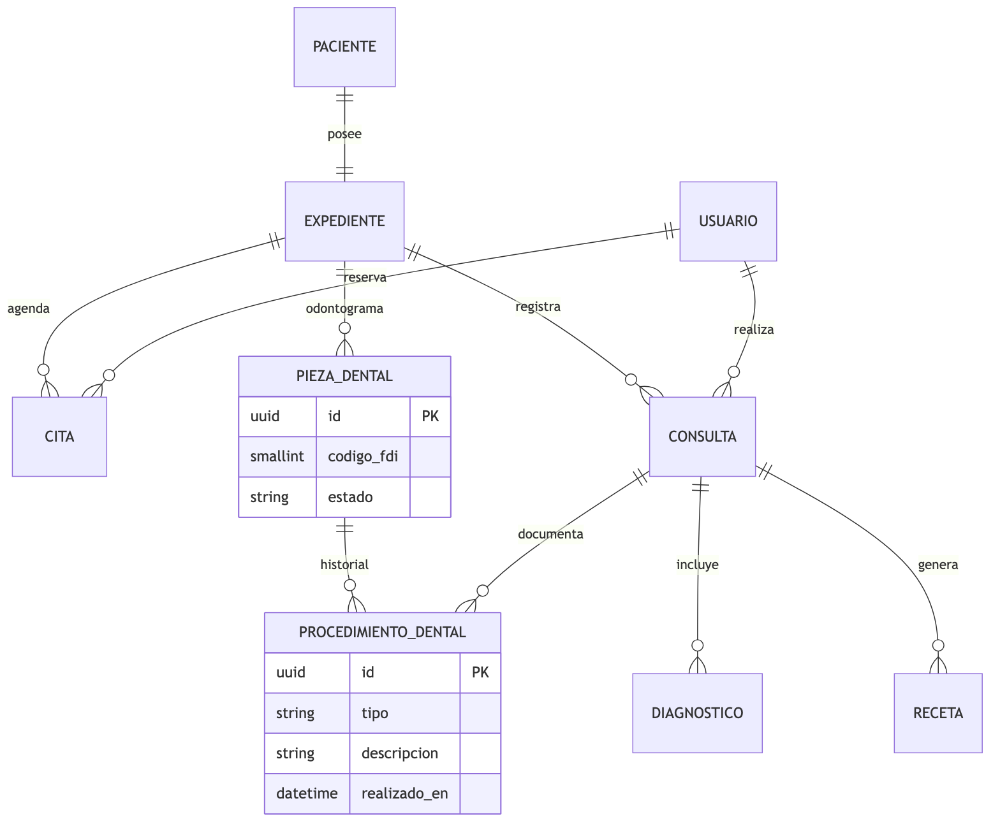
32 filas por expediente (códigos FDI 11–48). Descartado: JSON (rompe 1NF en un entregable de normalización) y 32 columnas (sin historial).
Cada intervención queda en procedimiento_dental ligada a la pieza y a la consulta.
Tablas InnoDB utf8mb4 en base odontologia. Sin Event Sourcing: simplicidad deliberada (hallazgo comparativo).
DDL: apps/api/src/infraestructura/mysql/migrations/001_clinico.sql
MySQL no tiene exclusion constraint como PostgreSQL btree_gist. En Entrega II el equivalente operativo es SELECT … FOR UPDATE dentro de transacción REPEATABLE READ. Documentado; no se finge una constraint de tabla.
El laboratorio no se modela en tablas relacionales en esta entrega (evitar EAV). Sí se levanta el mismo rigor de entidades, atributos, clasificación y operaciones que Hospital y Odontología, porque el enunciado exige cubrir las cuatro instituciones.
Motor asignado (decisión de proyecto): MongoDB. La implementación documental completa es Entrega II; aquí queda el análisis listo para esa implementación.
Una hematología, un examen de orina y un cultivo tienen estructuras distintas. Forzarlas a un esquema SQL fijo lleva a:
examen_id, campo, valor) — la anti-solución: sin tipado, consultas lentas, validación imposible.MongoDB encaja porque el resultado es un documento cuya forma depende del tipoExamen, con validación por schema (sin esquema ≠ sin validación).
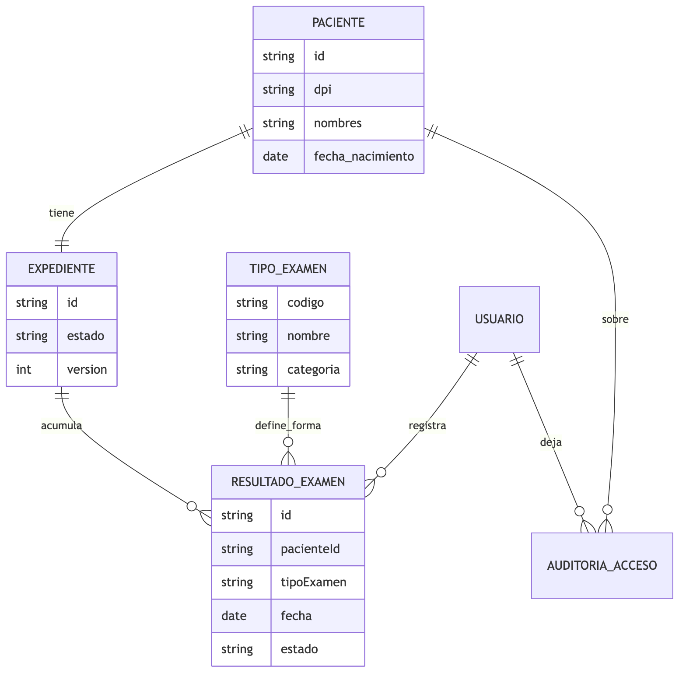
| Núcleo | En laboratorio |
|---|---|
| Paciente, Expediente, Usuario, Auditoría | Igual significado |
| Consulta / Diagnóstico / Receta | Opcionales o secundarios: el flujo principal es el resultado de examen |
| Cita | Puede existir para toma de muestra; no es el núcleo del valor clínico |
Mismos atributos lógicos del núcleo (ver documento de entidades). En laboratorio el paciente puede no tener DPI si es referido con código externo — atributo opcional codigo_referencia.
| Atributo | Tipo lógico | Clasificación | Notas |
|---|---|---|---|
| codigo | texto | público | ej. HEM_COMP, ORO_GRAL, CUL_URI |
| nombre | texto | público | |
| categoria | enum | público | hematologia / orina / cultivo / otro |
| descripcion | texto | público | |
| campos_esperados | lista de nombres | público | guía de validación; no son valores clínicos |
| Atributo | Tipo lógico | Clasificación | Notas |
|---|---|---|---|
| id | identificador | — | |
| pacienteId | referencia | — | no embeber el paciente |
| expedienteId | referencia | — | |
| tipoExamen | texto / ref | público | determina la forma de valores |
| fecha | timestamp | confidencial | fecha de toma / reporte |
| estado | enum | confidencial | pendiente / validado / anulado |
| solicitanteId | ref usuario | confidencial | médico que pidió |
| validadorId | ref usuario | confidencial | laboratorista |
| valores | estructura variable | restringido | ver abajo |
| observaciones | texto | restringido | |
| version | entero | — | concurrencia optimista |
valores según tipo (ejemplos sintéticos)Hematología completa
| Campo | Tipo |
|---|---|
| eritrocitos | número |
| hemoglobina | número |
| hematocrito | número |
| leucocitos | número |
| plaquetas | número |
| unidades | texto |
Orina general
| Campo | Tipo |
|---|---|
| color | texto |
| aspecto | texto |
| densidad | número |
| ph | número |
| proteinas | texto / enum |
| glucosa | texto / enum |
Cultivo
| Campo | Tipo |
|---|---|
| muestra | texto |
| microorganismo | texto |
| sensible_a | lista de textos |
| resistente_a | lista de textos |
| tiempo_incubacion_h | entero |
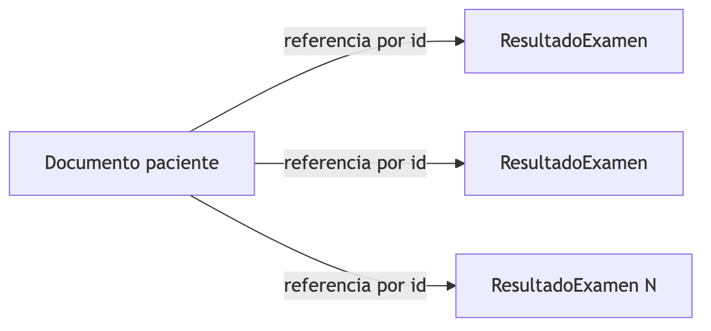
Decisión: exámenes referenciados, no embebidos dentro del paciente.
Razones:
Descartado: un solo documento paciente con arreglo examenes[] embebido.
{ pacienteId: 1, fecha: -1 }.replaceOne filtrando por id + version.| Dato | Nivel |
|---|---|
| Nombre del laboratorio, menú de exámenes | Público |
| Identidad del paciente, fecha de toma | Confidencial |
Todos los valores, cultivos, marcadores sensibles | Restringido |
| Resultados asociados a VIH / ITS / genética | Restringido (sensibilidad alta) |
El centro pediátrico comparte el núcleo del historial clínico, con dos extensiones propias del dominio: curva de crecimiento y esquema de vacunación. Las consultas son frecuentes, cortas y casi siempre por identificador de paciente conocido.
Motor asignado (decisión de proyecto): Redis como sistema de registro (no caché). El enunciado del curso menciona Firebase; este proyecto lo sustituye por Redis — pendiente de autorización del catedrático. Si se rechaza, Firebase vuelve y Redis queda solo como caché (cambio de un adaptador).
| Necesidad del dominio | Encaje |
|---|---|
Acceso siempre por clave conocida (paciente:{id}) | RedisJSON / hash |
| Mediciones ordenadas en el tiempo | Sorted set (score = timestamp) |
| Vacunas pendientes / vencidas “hoy” | Sorted set (score = fecha próxima dosis) |
| Escrituras atómicas read-modify-write | Script Lua |
Limitación consciente: consultas ad-hoc del tipo “todos los niños con percentil de peso < 3” no son naturales sin índice auxiliar o RediSearch. Se documenta; no se finge que Redis sea un warehouse analítico.
Redis de registro usa AOF (appendfsync everysec) + RDB. Ante un crash se puede perder hasta ~1 segundo de escrituras. Eso es aceptable para un historial de control pediátrico ambulatorio en este alcance académico, y debe quedar explícito.
La caché transversal de la plataforma vive en otra instancia Redis (sin AOF), para no persistir datos volátiles.
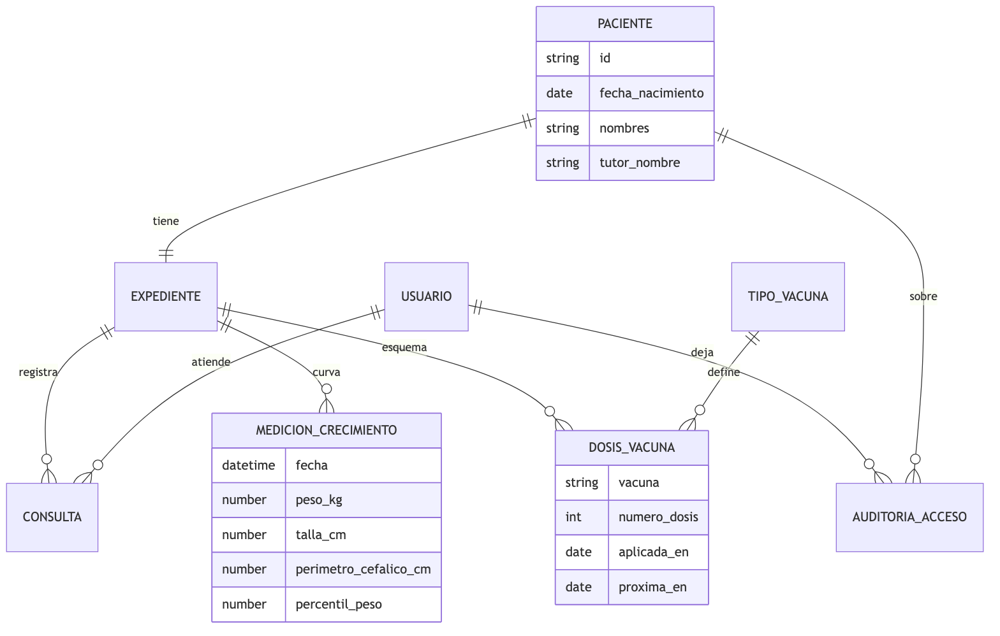
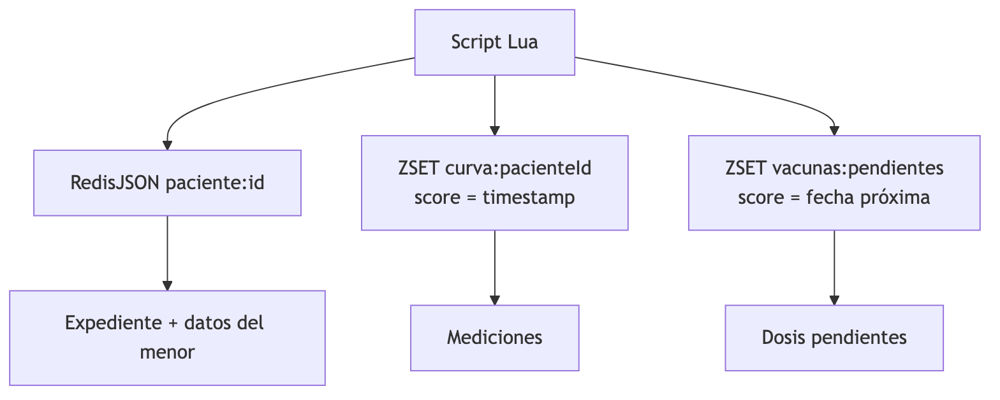
Esto no es el entregable relacional; es el mapa mental de cómo el análisis se materializará después.
| Atributo | Tipo lógico | Clasificación | Notas |
|---|---|---|---|
| id | identificador | — | |
| nombres, apellidos | texto | restringido | menor de edad |
| fecha_nacimiento | fecha | restringido | define edad / percentil |
| sexo | enum | restringido | |
| dpi_menor | texto nullable | restringido | a menudo ausente |
| tutor_nombre | texto | confidencial | responsable |
| tutor_telefono | texto | confidencial | |
| tutor_dpi | texto | confidencial | |
| alergias_conocidas | texto | restringido | |
| creado_en | timestamp | — |
Igual que el núcleo: estado (activo/archivado), motivo_archivo, version. En pediatría archivar puede significar traslado a medicina de adultos u otra institución.
| Atributo | Tipo lógico | Clasificación | Notas |
|---|---|---|---|
| pacienteId | ref | — | |
| fecha | timestamp | restringido | score del ZSET |
| peso_kg | número | restringido | |
| talla_cm | número | restringido | |
| perimetro_cefalico_cm | número nullable | restringido | sobre todo lactantes |
| percentil_peso | número nullable | restringido | |
| percentil_talla | número nullable | restringido | |
| registrado_por | ref usuario | confidencial |
| Atributo | Tipo lógico | Clasificación |
|---|---|---|
| codigo | texto | público |
| nombre | texto | público |
| dosis_totales_esquema | entero | público |
| intervalo_dias_tipico | entero | público |
| Atributo | Tipo lógico | Clasificación | Notas |
|---|---|---|---|
| pacienteId | ref | — | |
| vacunaCodigo | texto | restringido | |
| numero_dosis | entero | restringido | 1..N del esquema |
| aplicada_en | fecha nullable | restringido | null = aún no aplicada |
| proxima_en | fecha | restringido | score en vacunas:pendientes |
| lote | texto nullable | confidencial | |
| aplicada_por | ref usuario | confidencial |
Mismo significado del núcleo. Toda lectura de expediente pediátrico genera auditoría porque el sujeto es menor.
En pediatría el umbral sube: casi todo el expediente es restringido por tratarse de un menor, no solo diagnósticos o vacunas.
| Dato | Nivel |
|---|---|
| Nombre del centro, horarios, catálogo de vacunas | Público |
| Datos del tutor (teléfono, DPI) | Confidencial |
| Identidad del menor, mediciones, vacunas, consultas, alergias | Restringido |
Cualquier operación que toque expediente JSON + ZSET de curva/vacunas debe ser atómica (script Lua en Entrega II). Sin eso hay riesgo de curva desfasada respecto al documento.
Lista de lo que la aplicación necesita hacer sobre los datos. Sin SQL, sin endpoints, sin drivers. Es el contrato de comportamiento que Entrega II implementará en los cuatro motores.
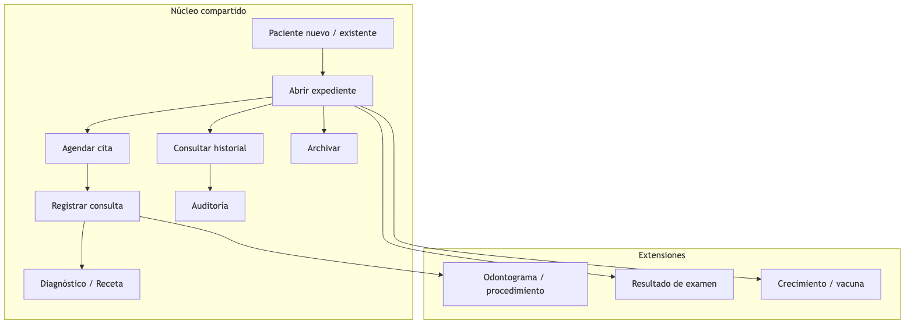
Estas operaciones son idénticas en intención para los cuatro motores; solo cambia *cómo* se persisten.
Cada atributo es atómico. El odontograma no es un JSON ni 32 columnas: es pieza_dental (una fila por pieza) + procedimiento_dental.
No hay atributos que dependan solo de parte de una clave compuesta. Las claves son UUID surrogadas; pieza_dental tiene UNIQUE (expediente_id, codigo_fdi) pero el estado depende de la pieza completa, no solo del código FDI.
| Determinante | Depende |
|---|---|
paciente.id | dpi, nombres, apellidos, fecha_nacimiento, contacto |
expediente.id | paciente_id, estado, version |
consulta.id | expediente_id, medico_id, ocurrida_en, motivo, notas |
catalogo_diagnostico.id | codigo, descripcion, sensible |
diagnostico.id | consulta_id, catalogo opcional, texto_libre |
pieza_dental.id | expediente_id, codigo_fdi, estado |
Los datos de catálogo no se repiten como única fuente en diagnóstico/receta: el texto_libre cubre lo no catalogado; el código vive en el catálogo (híbrido).
Descartado: guardar solo el string del diagnóstico en la consulta (sinónimo, sin 3NF clara). Descartado: EAV para resultados de laboratorio en SQL (anti-solución; por eso Laboratorio va a Mongo).
| Motor | Migración | Seed |
|---|---|---|
| PostgreSQL / Hospital | apps/api/src/infraestructura/postgres/migrations/001_clinico.sql | .../seeds/001_demo.sql |
| MySQL / Odontología | apps/api/src/infraestructura/mysql/migrations/001_clinico.sql | .../seeds/001_demo.sql |
cp .env.example .env
docker compose up -d
pnpm db:migrate
pnpm db:seed
pnpm verificar:entrega-1| Motor | Usuario | Privilegios |
|---|---|---|
| PostgreSQL | hospital_app | CONNECT + SELECT/INSERT/UPDATE en schema clinico |
| MySQL | odontologia_app | SELECT/INSERT/UPDATE en odontologia.* |
Sin SUPERUSER / sin DROP en el usuario de app.
MongoDB y Redis están arriba en Compose (infra lista). El análisis de negocio de laboratorio y pediátrico está documentado en esta entrega; el esquema/código de adaptadores llega en Entrega II junto con JWT, UI clínica, casos de uso y Event Sourcing del Hospital.
Comparación entre lo mínimo del enunciado y lo entregado. El proyecto busca sobrecumplir el análisis para que Entrega II no reabra levantamiento.
| Resultado esperado (enunciado) | Cobertura | Evidencia |
|---|---|---|
| ER de instituciones en motores relacionales | Completo | Hospital + Odontología |
| Modelo relacional de esas instituciones | Completo | Tablas/FK + DDL Postgres/MySQL |
| Entidades identificadas | Completo + extensiones | Núcleo + odonto + lab + pediátrico |
| Atributos por entidad | Completo + extensiones | Doc entidades + docs por institución |
| Público / confidencial / restringido | Completo | Clasificación + matriz 4 instituciones |
| BD normalizada (relacional) | Completo | 1NF–3NF + dependencias funcionales |
| Operaciones en lenguaje sencillo | Completo | 23 operaciones (núcleo + 3 extensiones) |
| Implementación en motores relacionales | Completo | Migraciones + seeds + verificación |
| Análisis de las cuatro instituciones | Completo (más allá del mínimo) | Lab y pediátrico con entidades/atributos/ops |
| Extra | Para qué |
|---|---|
| Diagrama de contexto 4 motores | Enmarcar el análisis |
| Arquitectura hexagonal (contexto) | Alinear con el mecanismo habilitador del curso |
| Análisis documental laboratorio (embeber vs referenciar) | Anticipar Entrega II sin implementarlo |
| Análisis Redis pediátrico (estructuras + trade-off 1s) | Idem; Redis como registro |
| Nota Firebase → Redis | Transparencia académica |
| Auditoría en el modelo desde Entrega I | Seguridad transversal |
| Odontograma 3NF (32 piezas + procedimientos) | Extensión de dominio real |
| Diagnóstico/medicamento híbrido | Flexibilidad sin romper normalización |
| Compose con 4 motores arriba | Infra lista; negocio solo en 2 |